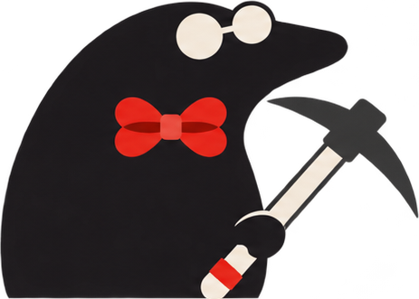

He works at a consulting firm in Geneva. He has 5 meetings per day, each on a different subject and with a different team. He doesn't have time to fully prepare for every meeting.
a
He looks for a document.
b
0 s
of silence. People are waiting.
c
He pulls up the wrong slide.
3 in 4
meetings hit at least one tech failure,
11min
costing about 11 minutes each.
Jabra, 2026
In a lab study,
people who talked while using a computer spoke more slowly and made more mistakes at both.
BYU, 2022
MS
We asked 6 people who present to clients every week.
“Clients always come up with questions I wasn't expecting. So I end up searching for documents or running another simulation while explaining what I'm doing.”
MSMathias Sudres · Insurance advisor in Switzerland
By talking to office workers, we realized:
The issue wasn't the software used for the meeting or actual technical issues.
It's error prone manual work under stress.
Introducing [Name].
We want to make the process of presenting in meetings seamless.
01It sets up the whole environment for you.
02It knows exactly what you want to show while you speak.
03It lets you focus entirely on interacting with your colleagues, getting your message across and having a productive meeting.
Your home cover
What clients ask us
01Can I lower my premium?
02What if I raise the deductible?
03How does this compare?
06
The opportunity
Market size
07
Shared
Live demo
Not just AI agent talk: we have trained actual models.

01
Our UI is minimal and doesn't disrupt the presenter.
02
Work is done in the background.
03
The presenter can cancel whenever he doesn't agree with the assistant.
[Architecture]
[Tech stack]
Our solution works live, in any software.
Notetakers
Act after the call.
Meeting agents like Teams Facilitator
Answer in the chat, inside Teams only.
[Name]
Works live, runs on your laptop, and hands control back the moment you want it. Works in any software.
Source: Microsoft Support (Teams Facilitator)
“…without jumping between ten different windows.”
MSMathias Sudres · Insurance advisor in Switzerland
“If this is something that is feasible, it for sure would help us a lot.”
RHRodolphe Henzi · Accenture
We will go B2B.
01
Integrating into the ecosystem of companies which would use [Name] for all their meetings.
02
Our assistant will adapt to the architectures of these companies, to know exactly how to look for documents.
Next, we will train [Name] on your workflow.
For it to be able to help you to its full potential.

 [Name]
[Name]